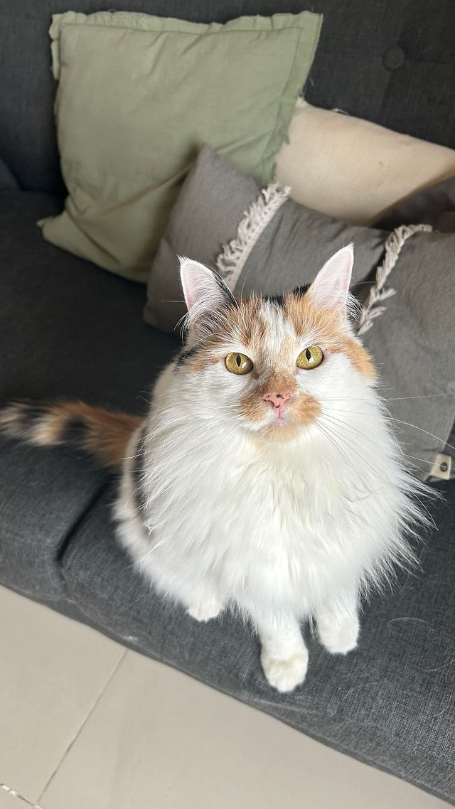
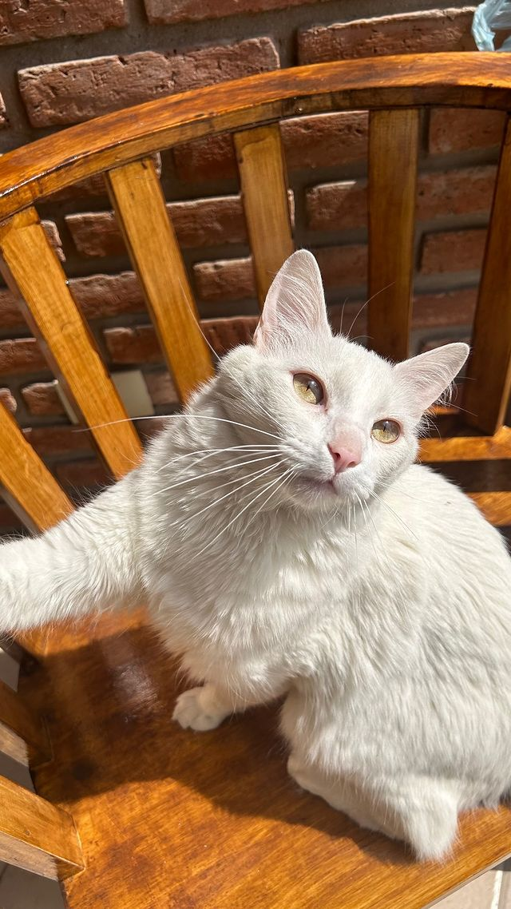
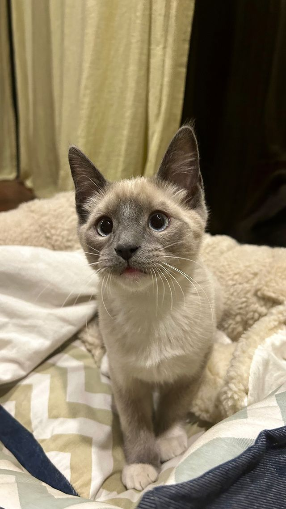
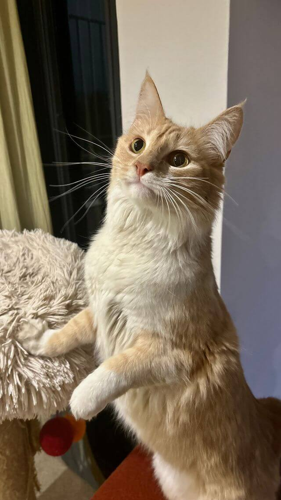
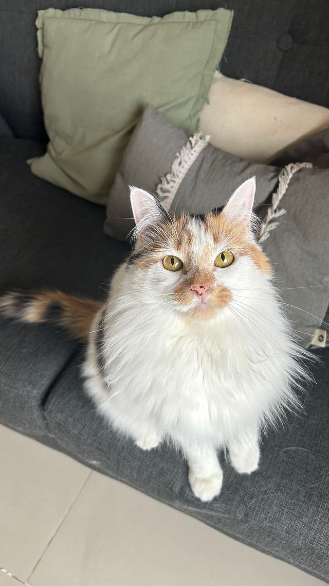
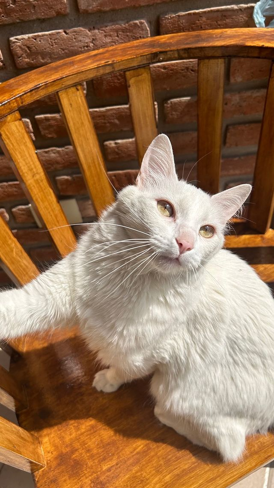
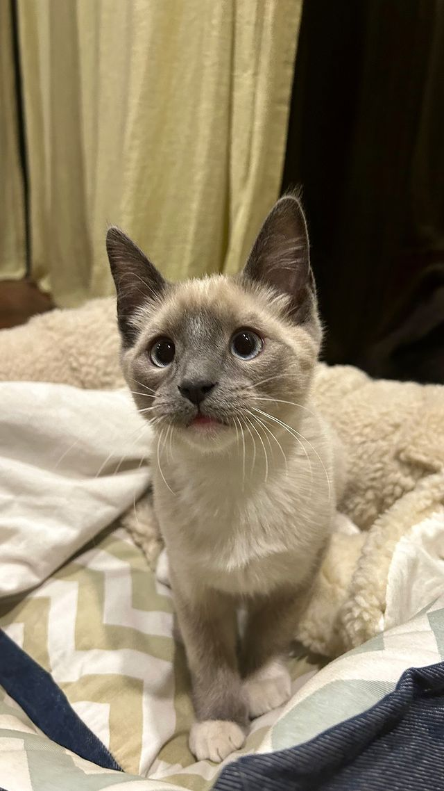
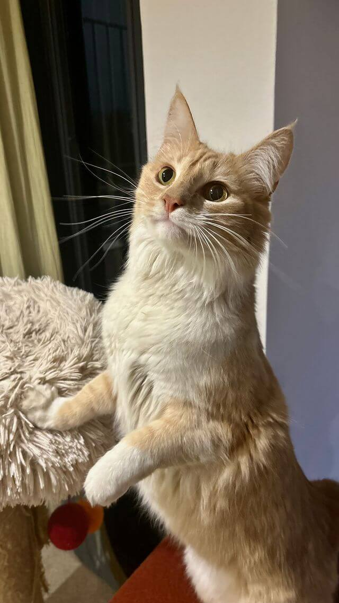

Tengo 27 años y soy una apasionada cuidadora de gatos con más de 4 años de experiencia. Mi amor por los felinos me llevó a crear este servicio de catsitting, donde cada gatito recibe atención personalizada y cariño en ausencia de sus dueños.
Naci en Caleta Olivia, Santa Cruz, y hace 6 años me mudé a la ciudad de Cordoba en donde comparto mi hogar con tres gatos rescatados y un perro senior que me acompaña desde mi niñez. Desde el 2018, me he dedicado a ayudar a animales en situación de abandono, lo que me ha permitido conocer a muchos amigos de cuatro patas y contribuir activamente en distintas protectoras locales.
Además de cuidar a gatos, rescato animales de vez en cuando de manera independiente y me encargo de encontrarles un hogar a través de adopciones responsables. Mi objetivo es siempre brindar la mejor atención y cariño a cada animal que llega a mi vida, dándoles la seguridad y el amor que merecen.
![[Tu Nombre] con un gato](../imgs/img2.jpg)
Actualmente, me desempeño como secretaria y asistente en una veterinaria llamada MiVet. Este rol me ha permitido profundizar mi conocimiento sobre el cuidado y la salud de los animales, algo que pongo en práctica tanto en mi trabajo como en mi servicio de catsitting.
En estos ultimos años, muchos tutores han confiado en mi con el cuidado de sus gatitos, en donde he logrado que cada uno de ellos se sientiera comodo y evitando el estres que se genera en ausencia de sus dueños, adaptandome a sus rutinas y sus temperamentos.

+4 años cuidando gatos de todas las edades en la Provincia de Córdoba.

Referencias comprobables disponibles en el apartado de Testimonios, extraidas de Google Maps.

Atención adaptada a las necesidades únicas de cada gato y hogar.

 






